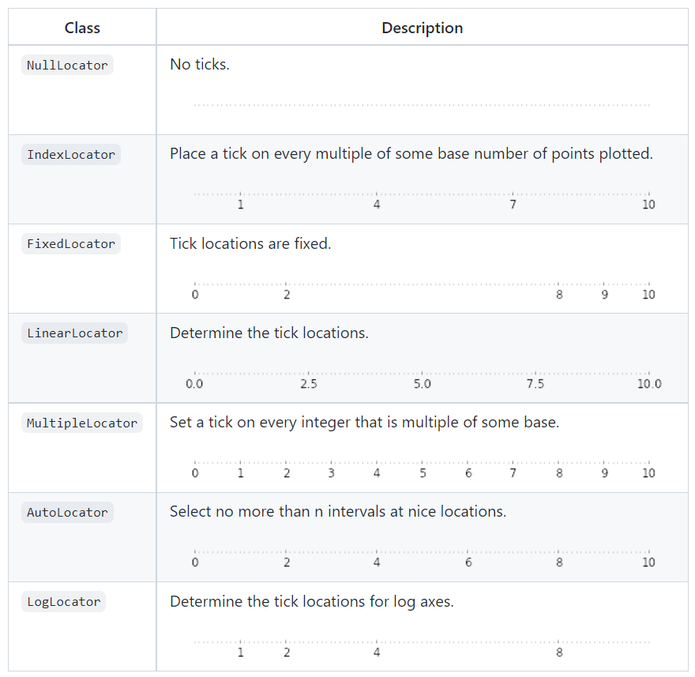

Introduction to Matplotlib
Contents
Introduction to Matplotlib#
Most people are visual learners, to check and understand your code it is useful to create graphs and visualizations.
Matplotlib is the most common used Python package for 2D graphics
You can quickly make publication-quality graphics in many formats
pyplot#
Most interaction is done using the pyplot module. This is built to mimic Matlab™
Making a Simple Plot#
In this section, we want to draw the cosine and sine functions on the same plot. Starting from the default settings, we’ll enrich the figure step by step to make it nicer.
The first step is to get the data for the sine and cosine functions:
import numpy as np
import matplotlib.pyplot as plt
# creates a linear spaced array
X = np.linspace(-np.pi, np.pi, 256, endpoint=True)
# computes the sine and cosine
C, S = np.cos(X), np.sin(X)
X is now a NumPy array with 256 values ranging from -π to +π (included). C is the cosine (256 values) and S is the sine (256 values).
plt.plot(X, C)
plt.plot(X, S)
plt.show()
Customizing Plots#
In matplotlib everything is customizable in a variety of ways.
You can control the defaults of almost every property in matplotlib: figure size and dpi, line width, color and style, axes, axis and grid properties, text and font properties and so on.
# Imports
import numpy as np
import matplotlib.pyplot as plt
# Create a new figure of size 8x6 points, using 100 dots per inch
plt.figure(figsize=(8, 6), dpi=100)
# Create a new subplot from a grid of 1x1
plt.subplot(111)
X = np.linspace(-np.pi, np.pi, 256, endpoint=True)
C, S = np.cos(X), np.sin(X)
# Plot cosine using blue color with a continuous line of width 1 (pixels)
plt.plot(X, C, color="blue", linewidth=1.0, linestyle="-")
# Plot sine using green color with a continuous line of width 1 (pixels)
plt.plot(X, S, color="green", linewidth=1.0, linestyle="-")
# Set x limits
plt.xlim(-4.0, 4.0)
# Set x ticks
plt.xticks(np.linspace(-4, 4, 9, endpoint=True))
# Set y limits
plt.ylim(-1.0, 1.0)
# Set y ticks
plt.yticks(np.linspace(-1, 1, 5, endpoint=True))
# Save figure using 72 dots per inch
# savefig("../figures/exercice_2.png",dpi=72)
# Show result on screen
plt.show()
As a first step, we want to have the cosine in blue and the sine in red and a slightly thicker line for both of them. We’ll also slightly alter the figure size to make it more horizontal.
plt.figure(figsize=(10, 6), dpi=80)
plt.plot(X, C, color="blue", linewidth=2.5, linestyle="-")
plt.plot(X, S, color="red", linewidth=2.5, linestyle="-")
[<matplotlib.lines.Line2D at 0x1191c0310>]
Setting Limits#
Current limits of the figure are a bit too tight and we want to make some space in order to clearly see all data points.
plt.figure(figsize=(8, 5), dpi=80)
plt.subplot(111)
X = np.linspace(-np.pi, np.pi, 256, endpoint=True)
C, S = np.cos(X), np.sin(X)
plt.plot(X, C, color="blue", linewidth=2.5, linestyle="-")
plt.plot(X, S, color="red", linewidth=2.5, linestyle="-")
plt.xlim(X.min() * 1.1, X.max() * 1.1)
plt.ylim(C.min() * 1.1, C.max() * 1.1)
plt.show()

Setting Ticks#
Current ticks are not ideal because they do not show the interesting values (+/-π,+/-π/2) for sine and cosine. We’ll change them such that they show only these values.
plt.figure(figsize=(8, 5), dpi=80)
plt.subplot(111)
X = np.linspace(-np.pi, np.pi, 256, endpoint=True)
C, S = np.cos(X), np.sin(X)
plt.plot(X, C, color="blue", linewidth=2.5, linestyle="-")
plt.plot(X, S, color="red", linewidth=2.5, linestyle="-")
plt.xlim(X.min() * 1.1, X.max() * 1.1)
plt.ylim(C.min() * 1.1, C.max() * 1.1)
plt.xticks([-np.pi, -np.pi / 2, 0, np.pi / 2, np.pi])
plt.yticks([-1, 0, +1])
plt.show()
Setting the Tick Labels#
Ticks are now properly placed but their label is not very explicit. We could guess that 3.142 is π but it would be better to make it explicit. When we set tick values, we can also provide a corresponding label in the second argument list.
Note that we’ll use latex to allow for nice rendering of the label.
import numpy as np
import matplotlib.pyplot as plt
plt.figure(figsize=(8, 5), dpi=80)
plt.subplot(111)
X = np.linspace(-np.pi, np.pi, 256, endpoint=True)
C, S = np.cos(X), np.sin(X)
plt.plot(X, C, color="blue", linewidth=2.5, linestyle="-")
plt.plot(X, S, color="red", linewidth=2.5, linestyle="-")
plt.xlim(X.min() * 1.1, X.max() * 1.1)
plt.xticks(
[-np.pi, -np.pi / 2, 0, np.pi / 2, np.pi],
[r"$-\pi$", r"$-\pi/2$", r"$0$", r"$+\pi/2$", r"$+\pi$"],
)
plt.ylim(C.min() * 1.1, C.max() * 1.1)
plt.yticks([-1, 0, +1], [r"$-1$", r"$0$", r"$+1$"])
plt.show()
Moving Splines#
Spines are the lines connecting the axis tick marks and noting the boundaries of the data area.
They can be placed at arbitrary positions and until now, they were on the border of the axis.
We’ll change that since we want to have them in the middle.
Since there are four of them (top/bottom/left/right), we’ll discard the top and right by setting their color to none
we’ll move the bottom and left ones to coordinate 0 in data space coordinates.
import numpy as np
import matplotlib.pyplot as plt
plt.figure(figsize=(8, 5), dpi=80)
ax = plt.subplot(111)
ax.spines["right"].set_color("none")
ax.spines["top"].set_color("none")
ax.xaxis.set_ticks_position("bottom")
ax.spines["bottom"].set_position(("data", 0))
ax.yaxis.set_ticks_position("left")
ax.spines["left"].set_position(("data", 0))
X = np.linspace(-np.pi, np.pi, 256, endpoint=True)
C, S = np.cos(X), np.sin(X)
plt.plot(X, C, color="blue", linewidth=2.5, linestyle="-")
plt.plot(X, S, color="red", linewidth=2.5, linestyle="-")
plt.xlim(X.min() * 1.1, X.max() * 1.1)
plt.xticks(
[-np.pi, -np.pi / 2, 0, np.pi / 2, np.pi],
[r"$-\pi$", r"$-\pi/2$", r"$0$", r"$+\pi/2$", r"$+\pi$"],
)
plt.ylim(C.min() * 1.1, C.max() * 1.1)
plt.yticks([-1, 0, +1], [r"$-1$", r"$0$", r"$+1$"])
plt.show()
Adding a Legend#
Let’s add a legend in the upper left corner. This only requires adding the keyword argument label (that will be used in the legend box) to the plot commands.
import numpy as np
import matplotlib.pyplot as plt
plt.figure(figsize=(8, 5), dpi=80)
ax = plt.subplot(111)
ax.spines["right"].set_color("none")
ax.spines["top"].set_color("none")
ax.xaxis.set_ticks_position("bottom")
ax.spines["bottom"].set_position(("data", 0))
ax.yaxis.set_ticks_position("left")
ax.spines["left"].set_position(("data", 0))
X = np.linspace(-np.pi, np.pi, 256, endpoint=True)
C, S = np.cos(X), np.sin(X)
plt.plot(X, C, color="blue", linewidth=2.5, linestyle="-", label="cosine")
plt.plot(X, S, color="red", linewidth=2.5, linestyle="-", label="sine")
plt.xlim(X.min() * 1.1, X.max() * 1.1)
plt.xticks(
[-np.pi, -np.pi / 2, 0, np.pi / 2, np.pi],
[r"$-\pi$", r"$-\pi/2$", r"$0$", r"$+\pi/2$", r"$+\pi$"],
)
plt.ylim(C.min() * 1.1, C.max() * 1.1)
plt.yticks([-1, +1], [r"$-1$", r"$+1$"])
plt.legend(loc="upper left", frameon=False)
# plt.savefig("../figures/exercice_8.png",dpi=72)
plt.show()
Annotations#
In matplotlib you can add annotations to points of interest automatically.
import numpy as np
import matplotlib.pyplot as plt
plt.figure(figsize=(8, 5), dpi=80)
ax = plt.subplot(111)
ax.spines["right"].set_color("none")
ax.spines["top"].set_color("none")
ax.xaxis.set_ticks_position("bottom")
ax.spines["bottom"].set_position(("data", 0))
ax.yaxis.set_ticks_position("left")
ax.spines["left"].set_position(("data", 0))
X = np.linspace(-np.pi, np.pi, 256, endpoint=True)
C, S = np.cos(X), np.sin(X)
plt.plot(X, C, color="blue", linewidth=2.5, linestyle="-", label="cosine")
plt.plot(X, S, color="red", linewidth=2.5, linestyle="-", label="sine")
plt.xlim(X.min() * 1.1, X.max() * 1.1)
plt.xticks(
[-np.pi, -np.pi / 2, 0, np.pi / 2, np.pi],
[r"$-\pi$", r"$-\pi/2$", r"$0$", r"$+\pi/2$", r"$+\pi$"],
)
plt.ylim(C.min() * 1.1, C.max() * 1.1)
plt.yticks([-1, +1], [r"$-1$", r"$+1$"])
t = 2 * np.pi / 3
plt.plot([t, t], [0, np.cos(t)], color="blue", linewidth=1.5, linestyle="--")
plt.scatter(
[
t,
],
[
np.cos(t),
],
50,
color="blue",
)
plt.annotate(
r"$\cos(\frac{2\pi}{3})=-\frac{1}{2}$",
xy=(t, np.cos(t)),
xycoords="data",
xytext=(-90, -50),
textcoords="offset points",
fontsize=16,
arrowprops=dict(arrowstyle="->", connectionstyle="arc3,rad=.2"),
)
plt.plot([t, t], [0, np.sin(t)], color="red", linewidth=1.5, linestyle="--")
plt.scatter(
[
t,
],
[
np.sin(t),
],
50,
color="red",
)
plt.annotate(
r"$\sin(\frac{2\pi}{3})=\frac{\sqrt{3}}{2}$",
xy=(t, np.sin(t)),
xycoords="data",
xytext=(+10, +30),
textcoords="offset points",
fontsize=16,
arrowprops=dict(arrowstyle="->", connectionstyle="arc3,rad=.2"),
)
plt.legend(loc="upper left", frameon=False)
# plt.savefig("../figures/exercice_9.png", dpi=72)
plt.show()
Creating Beautiful Figures#
When creating publish-quality figures, the details are key. In the previous plot:
The tick labels are not visible - we can make them bigger so they are visible
The tick labels are small. It would be helpful if they were bigger
Figures, Subplots , Axes, Ticks#
So far we have used the built-in figure formating. Within matplotlib you have full control over your figures.
Within the figure you can have subplots
The subplots can be on a regular grid or placed randomly
When we call plot by default we get the current graphical axis
gca()and the current graphical figuregcf()
Figures#
A figure is the window in the GUI.
Figures are numbered starting from 1
There are several parameters that determine what a figure looks like:
Argument |
Default |
Description |
|---|---|---|
num |
1 |
number of figure |
figsize |
figure.figsize |
figure size in in inches (width, height) |
dpi |
figure.dpi |
resolution in dots per inch |
facecolor |
figure.facecolor |
color of the drawing background |
edgecolor |
figure.edgecolor |
color of edge around the drawing background |
frameon |
True |
draw figure frame or not |
The defaults can be specified in the resource file and will be used most of the time. Only the number of the figure is frequently changed.
As with other objects, you can set figure properties with the set_something methods.
Subplots#
With subplot you can arrange plots in a regular grid. You need to specify the number of rows and columns and the number of the plot.
from pylab import *
subplot(2,1,1)
xticks([]), yticks([])
text(0.5,0.5, 'subplot(2,1,1)',ha='center',va='center',size=24,alpha=.5)
subplot(2,1,2)
xticks([]), yticks([])
text(0.5,0.5, 'subplot(2,1,2)',ha='center',va='center',size=24,alpha=.5)
# plt.savefig('../figures/subplot-horizontal.png', dpi=64)
show()
from pylab import *
subplot(1,2,1)
xticks([]), yticks([])
text(0.5,0.5, 'subplot(2,2,1)',ha='center',va='center',size=24,alpha=.5)
subplot(1,2,2)
xticks([]), yticks([])
text(0.5,0.5, 'subplot(2,2,2)',ha='center',va='center',size=24,alpha=.5)
# plt.savefig('../figures/subplot-vertical.png', dpi=64)
show()
from pylab import *
subplot(2,2,1)
xticks([]), yticks([])
text(0.5,0.5, 'subplot(2,2,1)',ha='center',va='center',size=20,alpha=.5)
subplot(2,2,2)
xticks([]), yticks([])
text(0.5,0.5, 'subplot(2,2,2)',ha='center',va='center',size=20,alpha=.5)
subplot(2,2,3)
xticks([]), yticks([])
text(0.5,0.5, 'subplot(2,2,3)',ha='center',va='center',size=20,alpha=.5)
subplot(2,2,4)
xticks([]), yticks([])
text(0.5,0.5, 'subplot(2,2,4)',ha='center',va='center',size=20,alpha=.5)
# savefig('../figures/subplot-grid.png', dpi=64)
show()
You can also use GridSpec, a more powerful tool for laying out plots
from pylab import *
import matplotlib.gridspec as gridspec
G = gridspec.GridSpec(3, 3)
axes_1 = subplot(G[0, :])
xticks([]), yticks([])
text(0.5,0.5, 'Axes 1',ha='center',va='center',size=24,alpha=.5)
axes_2 = subplot(G[1,:-1])
xticks([]), yticks([])
text(0.5,0.5, 'Axes 2',ha='center',va='center',size=24,alpha=.5)
axes_3 = subplot(G[1:, -1])
xticks([]), yticks([])
text(0.5,0.5, 'Axes 3',ha='center',va='center',size=24,alpha=.5)
axes_4 = subplot(G[-1,0])
xticks([]), yticks([])
text(0.5,0.5, 'Axes 4',ha='center',va='center',size=24,alpha=.5)
axes_5 = subplot(G[-1,-2])
xticks([]), yticks([])
text(0.5,0.5, 'Axes 5',ha='center',va='center',size=24,alpha=.5)
#plt.savefig('../figures/gridspec.png', dpi=64)
show()

Axes#
Axes are very similar to subplots but allow placement of plots at any location in the figure. So if we want to put a smaller plot inside a bigger one we do so with axes.
import matplotlib.pyplot as plt
plt.axes([0.1,0.1,.8,.8])
plt.xticks([]), plt.yticks([])
plt.text(0.6,0.6, 'axes([0.1,0.1,.8,.8])',ha='center',va='center',size=20,alpha=.5)
plt.axes([0.2,0.2,.3,.3])
plt.xticks([]), plt.yticks([])
plt.text(0.5,0.5, 'axes([0.2,0.2,.3,.3])',ha='center',va='center',size=16,alpha=.5)
# plt.savefig("../figures/axes.png",dpi=64)
plt.show()
import matplotlib.pyplot as plt
plt.axes([0.1,0.1,.5,.5])
plt.xticks([]), plt.yticks([])
plt.text(0.1,0.1, 'axes([0.1,0.1,.5,.5])',ha='left',va='center',size=16,alpha=.5)
plt.axes([0.2,0.2,.5,.5])
plt.xticks([]), plt.yticks([])
plt.text(0.1,0.1, 'axes([0.2,0.2,.5,.5])',ha='left',va='center',size=16,alpha=.5)
plt.axes([0.3,0.3,.5,.5])
plt.xticks([]), plt.yticks([])
plt.text(0.1,0.1, 'axes([0.3,0.3,.5,.5])',ha='left',va='center',size=16,alpha=.5)
plt.axes([0.4,0.4,.5,.5])
plt.xticks([]), plt.yticks([])
plt.text(0.1,0.1, 'axes([0.4,0.4,.5,.5])',ha='left',va='center',size=16,alpha=.5)
# plt.savefig("../figures/axes-2.png",dpi=64)
plt.show()
Ticks#
Well-formatted ticks are important for publish-ready figures.Matplotlib provides a totally configurable system for ticks.
Tick locators specify where ticks should appear
Tick formatters to give ticks the appearance you want.
Major and minor ticks can be located and formatted independently
By default, minor ticks are not shown
Tick Locators#
There are several locators for different kinds of requirements:

Dates are tricky to deal with. For this you can use matplotlib.dates utility
Animations#
The easiest way to make an animation in matplotlib is to declare a FuncAnimation object that specifies to matplotlib what the figure is to update, what is the update function and what the delay is between frames.
Animation Example: Drip Drop#
A very simple rain effect can be obtained by having small growing rings randomly positioned over a figure.
Of course, they won’t grow forever since the wave is supposed to dampen with time.
To simulate that, we can use a more and more transparent color as the ring is growing, up to the point where it is no more visible. At this point, we remove the ring and create a new one.
1. Create a Blank Figure#
# New figure with white background
fig = plt.figure(figsize=(6,6), facecolor='white')
# New axis over the whole figure, no frame and a 1:1 aspect ratio
ax = fig.add_axes([0,0,1,1], frameon=False, aspect=1)
2. Plotting data#
We want to create several rings using scatter plot
We want to set an initial size of the ring between some range
We want to make sure as the rings get larger, they get lighter.
The transparency of an object is controlled with the alpha setting
import numpy as np
import matplotlib.pyplot as plt
# New figure with white background
fig = plt.figure(figsize=(6,6), facecolor='white')
# New axis over the whole figure and a 1:1 aspect ratio
ax = fig.add_axes([0.005,0.005,.99,.99], frameon=True, aspect=1)
# Number of ring
n = 50
size_min = 50
size_max = 50*50
# Ring position
P = np.random.uniform(0,1,(n,2))
# Ring colors
C = np.ones((n,4)) * (0,0,0,1)
# Alpha color channel goes from 0 (transparent) to 1 (opaque)
C[:,3] = np.linspace(0,1,n)
# Ring sizes
S = np.linspace(size_min, size_max, n)
# Scatter plot
scat = ax.scatter(P[:,0], P[:,1], s=S, lw = 0.5,
edgecolors = C, facecolors='None')
# Ensure limits are [0,1] and remove ticks
ax.set_xlim(0,1), ax.set_xticks([])
ax.set_ylim(0,1), ax.set_yticks([])
# plt.savefig("../figures/rain-static.png",dpi=72)
plt.show()
3. The Update Function#
Now, we need to write the update function for our animation.
At each time step each ring should grow and become more transparent.
The largest ring should be totally transparent and thus removed.
We won’t actually remove the largest ring but re-use it to set a new ring at a new random position with nominal size and color. This will keep the number of rings constant
import numpy as np
import matplotlib
import matplotlib.pyplot as plt
from matplotlib.animation import FuncAnimation
# No toolbar
matplotlib.rcParams['toolbar'] = 'None'
# New figure with white background
fig = plt.figure(figsize=(6,6), facecolor='white')
# New axis over the whole figureand a 1:1 aspect ratio
# ax = fig.add_axes([0,0,1,1], frameon=False, aspect=1)
ax = fig.add_axes([0.005,0.005,0.990,0.990], frameon=True, aspect=1)
# Number of ring
n = 50
size_min = 50
size_max = 50*50
# Ring position
P = np.random.uniform(0,1,(n,2))
# Ring colors
C = np.ones((n,4)) * (0,0,0,1)
# Alpha color channel goes from 0 (transparent) to 1 (opaque)
C[:,3] = np.linspace(0,1,n)
# Ring sizes
S = np.linspace(size_min, size_max, n)
# Scatter plot
scat = ax.scatter(P[:,0], P[:,1], s=S, lw = 0.5,
edgecolors = C, facecolors='None')
# Ensure limits are [0,1] and remove ticks
ax.set_xlim(0,1), ax.set_xticks([])
ax.set_ylim(0,1), ax.set_yticks([])
def update(frame):
global P, C, S
# Every ring is made more transparent
C[:,3] = np.maximum(0, C[:,3] - 1.0/n)
# Each ring is made larger
S += (size_max - size_min) / n
# Reset ring specific ring (relative to frame number)
i = frame % 50
P[i] = np.random.uniform(0,1,2)
S[i] = size_min
C[i,3] = 1
# Update scatter object
scat.set_edgecolors(C)
scat.set_sizes(S)
scat.set_offsets(P)
return scat,
animation = FuncAnimation(fig, update, interval=10)
# animation.save('../figures/rain.gif', writer='imagemagick', fps=30, dpi=72)
plt.show()
4. Saving the Movie#
animation = FuncAnimation(fig, update, interval=10, blit=True, frames=200)
# animation.save('rain.gif', writer='imagemagick', fps=30, dpi=40)
plt.show()
5. Rendering the movie in a notebook#
from IPython.display import HTML
HTML(animation.to_html5_video())
---------------------------------------------------------------------------
RuntimeError Traceback (most recent call last)
Input In [21], in <cell line: 2>()
1 from IPython.display import HTML
----> 2 HTML(animation.to_html5_video())
File /opt/homebrew/Caskroom/miniforge/base/envs/jupyterbook/lib/python3.10/site-packages/matplotlib/animation.py:1264, in Animation.to_html5_video(self, embed_limit)
1261 path = Path(tmpdir, "temp.m4v")
1262 # We create a writer manually so that we can get the
1263 # appropriate size for the tag
-> 1264 Writer = writers[mpl.rcParams['animation.writer']]
1265 writer = Writer(codec='h264',
1266 bitrate=mpl.rcParams['animation.bitrate'],
1267 fps=1000. / self._interval)
1268 self.save(str(path), writer=writer)
File /opt/homebrew/Caskroom/miniforge/base/envs/jupyterbook/lib/python3.10/site-packages/matplotlib/animation.py:151, in MovieWriterRegistry.__getitem__(self, name)
149 if self.is_available(name):
150 return self._registered[name]
--> 151 raise RuntimeError(f"Requested MovieWriter ({name}) not available")
RuntimeError: Requested MovieWriter (ffmpeg) not available